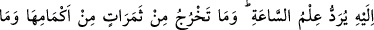
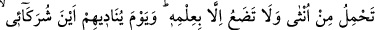
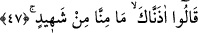

Mâcişûn şöyle demiştir: Babam vefât edince onu teneşire koyduk. Yıkayıcı gelip
gasilhâneye girdiğinde babamın ayağından bir ter damladığını gördü, bu adam burada
otuz gün bekledi. Sonra kalkıp oturarak kendisine biraz un çorbası getirmemizi istedi.
Çorbayı içiverdi. Biz ona ne gördüysen bize anlat, dedik. O da şöyle anlattı:
–Mânâ âleminde rûhum alınıp yükseltildi. Bir melek beni alarak birinci kat semâya
çıkardı. Kapının açılmasını istedi ve kapı açıldı. Nihâyet yedinci kat semâya kadar
gidildi. Orada; “Yanındaki kim?” diye soruldu, o da: “Mâcişûn” dedi. “Ona izin yok o
henüz vefat etmemiş; biraz daha yaşayacaktır” denildi. Sonra melek beni yere indirdi.
Ben Peygamber (s.a.)’i gördüm. Ebû Bekir Sıddîk sağında, Ömer solunda, Ömer b.
Abdülazîz önündeydi. Ben meleğe; “Bu Ömer b. Abdülazîz, Peygamber (s.a.)’e nasıl bu
kadar yakın oluyor?” dedim. Melek: “O, cevir ve zulüm döneminde hak ile amel etti.
Ebû Bekir’le Ömer, hak ve adâletin hâkim olduğu dönemde hak ile amel ettiler” dedi.
Allah iyilik murâd ettiği kavme
İleri görüşlü ve âdil bir hükümdar verir,
Dünyayı vîran etmek isterse,
Ülkeyi zâlim birinin eline verir.
Emniyet ve selâmet Allah’tandır.
47. Kıyâmet gününün bilgisi, O’na havâle edilir. O’nun bilgisi dışında hiçbir
meyve (çekirdeği) kabuğunu yarıp çıkamaz, hiçbir dişi gebe kalmaz ve doğurmaz.
Allah onlara: Ortaklarım nerede! diye seslendiği gün: Buna dâir bizden hiçbir şâhid
olmadığını sana arzederiz, derler.
“Kıyâmet gününün bilgisi, O’na havâle edilir.” Duruşma sâatini, kıyâmeti bilmek,
yalnız Allah’a havâle edilir. “Kıyâmet ne zaman kopacak?” diye sorulduğunda: “Allah
bilir” denilir. Çünkü kıyâmeti Allah’tan başka hiç kimse bilemez. Kıyâmet kopup
geldiği zaman iyiye cennet, kötüye cehennem hükmü verilir. “O’nun bilgisi dışında
hiçbir meyve (çekirdeği) kabuğunu yarıp çıkamaz, hiçbir dişi gebe kalmaz ve
doğurmaz.” O’nun bilgisi olmadan ne meyveler kabuklarından çıkar, ne bir dişi gebe
kalır ve ne de doğurur. “Allah Onlara: “Ortaklarım nerede?” diye seslendiği gün:
“Buna dâir bizden hiçbir şâhid olmadığını sana arz ederiz” derler.”
Burada “min semerâtin” kelimesine “min” harf-i cerri ferd ve cins gibi mânâların